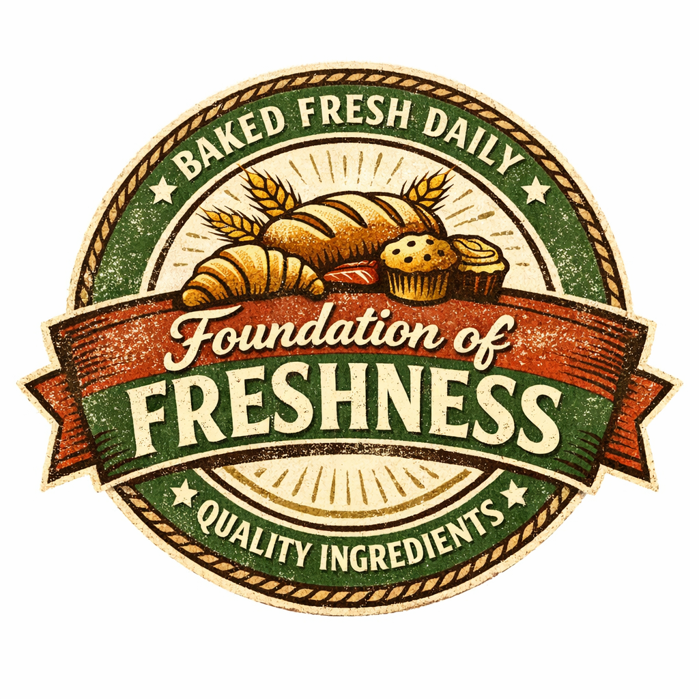

🍞 Salford Bakery 🍞

Salford Bakery — Muscle Shoals, Alabama (est. 2017)
Nestled in the heart of Muscle Shoals, Alabama, Salford Bakery has been delighting locals and visitors alike since 2017 with its handcrafted breads, pastries, and classic Southern-inspired confections. Known for its warm, welcoming atmosphere and commitment to quality, Salford Bakery blends time-honored baking traditions with fresh, seasonal ingredients. From flaky morning croissants to rich, buttery cakes and artisan sourdough loaves, every item is baked daily with care. Whether you’re stopping by for a cup of freshly brewed coffee or picking up a specialty treat for a celebration, Salford Bakery offers a delicious taste of Southern hospitality.
Order Online

Our products extend to you through an easy-to-use and trusted online ordering system. Simply choose which savory good you'd like and add it to your cart so we can have it ready upon your arrival!

Bagels

Donuts

Croissants

Cookies

Danishes
Ethiopian Coffee
Foundation Of Freshness

Our foundation of freshness comes from the belief that all our goods are baked daily and from the freshest source! Simultaneously, our coffee grounds are imported directly from Ethiopia. Take a bite of one of our Apple fritters or croissants, and know the difference between us and the competititon!
- Bagels:Baked 4 hours ago
- Donuts:Baked 3 hours ago
- Croissants:Baked just now
- Cookies:Baked 4 hours ago
- Danishes:Baked 5 hours ago
- Ethiopian Coffee:Brewed just now

Famous people who have bought and enjoyed our product:
Neil Armstrong,
Angelina Jolie,
Brad Pitt,
Johnny Depp,
& Kevin Hart
Neil Armstrong said, "The flavor is out of this world!"
Contact Me